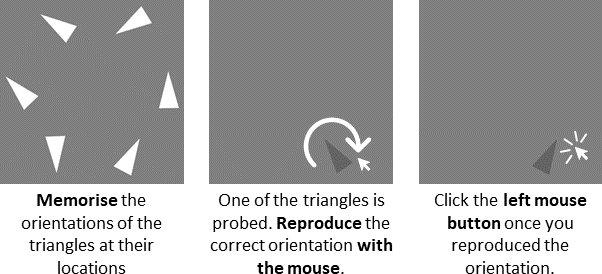

Your task is to memorise the orientations of 2, 4, or 6 simultaneously presented triangles.
After a brief delay, you will be asked to reproduce the orientation of one of the triangles previously shown.
Use your mouse to rotate the triangle so that its orientation matches that of the triangle previously shown at this location.

Please press the forward arrow key to the next page.